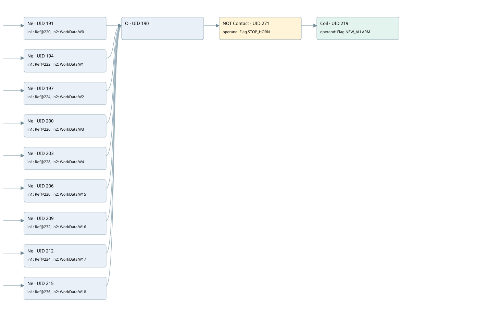

com_w3 bit11 (new_allarm)
allarm manager · 검색 색인 순서 2 · 원본 내부 NID 추정 2
백업 PLF 원본의 2642098 바이트 위치에서 복원한 XML. 검색 문서 928의 객체 키 16102200740f000000000000와 연결했다. 이름 해석 11/20개. 남은 RefId는 상수 또는 미해석 참조다.
연결 구조 다시 그리기
원본 Part/PCon/Wire를 이용한 연결도다. TIA 화면의 래더 배치 또는 실행 결과를 재현한 그림은 아니다. 핀 연결은 아래 표와 원본 XML을 기준으로 읽는다. 노드 위에 마우스를 두면 피연산자 이름을 볼 수 있다.

접점·코일·블록과 피연산자
| Part UID | Gate | Negated 핀 | 연결 피연산자 |
|---|---|---|---|
| 191 | Ne | in1 = RefId 8 / ORef UID 220; in2 = WorkData.W0 | |
| 194 | Ne | in1 = RefId 12 / ORef UID 222; in2 = WorkData.W1 | |
| 197 | Ne | in1 = RefId 15 / ORef UID 224; in2 = WorkData.W2 | |
| 200 | Ne | in1 = RefId 18 / ORef UID 226; in2 = WorkData.W3 | |
| 203 | Ne | in1 = RefId 21 / ORef UID 228; in2 = WorkData.W4 | |
| 206 | Ne | in1 = RefId 24 / ORef UID 230; in2 = WorkData.W15 | |
| 209 | Ne | in1 = RefId 27 / ORef UID 232; in2 = WorkData.W16 | |
| 212 | Ne | in1 = RefId 30 / ORef UID 234; in2 = WorkData.W17 | |
| 215 | Ne | in1 = RefId 33 / ORef UID 236; in2 = WorkData.W18 | |
| 190 | O | ||
| 271 | Contact | operand | operand = Flag.STOP_HORN |
| 219 | Coil | operand = Flag.NEW_ALLARM |
접점 경로를 펼친 조건식
Contact·O/A·비교기의 원본 연결을 읽기 쉽게 펼친 보조 해석이다. POWER는 전원 레일 시작을 뜻한다. 호출 블록·에지·타이머의 내부 동작과 다중 쓰기 순서는 이 표로 실행 검증하지 않았다. 미해석 핀과 RefId는 원문 연결표에서 확인한다.
| UID | 동작 | 대상 | 원본 접점 경로 | 내용 |
|---|---|---|---|---|
| 219 | Coil | Flag.NEW_ALLARM | (([ORef UID 220 != WorkData.W0] OR [ORef UID 222 != WorkData.W1] OR [ORef UID 224 != WorkData.W2] OR [ORef UID 226 != WorkData.W3] OR [ORef UID 228 != WorkData.W4] OR [ORef UID 230 != WorkData.W15] OR [ORef UID 232 != WorkData.W16] OR [ORef UID 234 != WorkData.W17] OR [ORef UID 236 != WorkData.W18]) AND NOT [Flag.STOP_HORN]) | 조건에 따른 Coil 기록 |
원본 배선 연결
| Wire UID | 동일 Wire 연결 끝점 |
|---|---|
| 273 | Powerrail {} ↔ Part 191.pre ↔ Part 194.pre ↔ Part 197.pre ↔ Part 200.pre ↔ Part 203.pre ↔ Part 206.pre ↔ Part 209.pre ↔ Part 212.pre ↔ Part 215.pre |
| 240 | ORef 220 (RefId 8) ↔ Part 191.in1 |
| 241 | ORef 221 (WorkData.W0) ↔ Part 191.in2 |
| 242 | Part 191.out ↔ Part 190.in1 |
| 243 | ORef 222 (RefId 12) ↔ Part 194.in1 |
| 244 | ORef 223 (WorkData.W1) ↔ Part 194.in2 |
| 245 | Part 194.out ↔ Part 190.in2 |
| 246 | ORef 224 (RefId 15) ↔ Part 197.in1 |
| 247 | ORef 225 (WorkData.W2) ↔ Part 197.in2 |
| 248 | Part 197.out ↔ Part 190.in3 |
| 249 | ORef 226 (RefId 18) ↔ Part 200.in1 |
| 250 | ORef 227 (WorkData.W3) ↔ Part 200.in2 |
| 251 | Part 200.out ↔ Part 190.in4 |
| 252 | ORef 228 (RefId 21) ↔ Part 203.in1 |
| 253 | ORef 229 (WorkData.W4) ↔ Part 203.in2 |
| 254 | Part 203.out ↔ Part 190.in5 |
| 255 | ORef 230 (RefId 24) ↔ Part 206.in1 |
| 256 | ORef 231 (WorkData.W15) ↔ Part 206.in2 |
| 257 | Part 206.out ↔ Part 190.in6 |
| 258 | ORef 232 (RefId 27) ↔ Part 209.in1 |
| 259 | ORef 233 (WorkData.W16) ↔ Part 209.in2 |
| 260 | Part 209.out ↔ Part 190.in7 |
| 261 | ORef 234 (RefId 30) ↔ Part 212.in1 |
| 262 | ORef 235 (WorkData.W17) ↔ Part 212.in2 |
| 263 | Part 212.out ↔ Part 190.in8 |
| 264 | ORef 236 (RefId 33) ↔ Part 215.in1 |
| 265 | ORef 237 (WorkData.W18) ↔ Part 215.in2 |
| 266 | Part 215.out ↔ Part 190.in9 |
| 267 | Part 190.out ↔ Part 271.in |
| 268 | ORef 238 (Flag.STOP_HORN) ↔ Part 271.operand |
| 272 | Part 271.out ↔ Part 219.in |
| 270 | ORef 239 (Flag.NEW_ALLARM) ↔ Part 219.operand |
식별자 해석 근거 20개
| ORef UID | RefId | 이름 | IdentXmlPart 파일 | 해석 방법 |
|---|---|---|---|---|
| 220 | 8 | 미해석 RefId | 식별 선언 원본 참조 | 미해석 |
| 221 | 10 | WorkData.W0 | 0565-IdentXmlPart.xml | UID/RID + search-text + NID agreement |
| 222 | 12 | 미해석 RefId | 식별 선언 원본 참조 | 미해석 |
| 223 | 13 | WorkData.W1 | 0565-IdentXmlPart.xml | UID/RID + search-text + NID agreement |
| 224 | 15 | 미해석 RefId | 식별 선언 원본 참조 | 미해석 |
| 225 | 16 | WorkData.W2 | 0565-IdentXmlPart.xml | UID/RID + search-text + NID agreement |
| 226 | 18 | 미해석 RefId | 식별 선언 원본 참조 | 미해석 |
| 227 | 19 | WorkData.W3 | 0565-IdentXmlPart.xml | UID/RID + search-text + NID agreement |
| 228 | 21 | 미해석 RefId | 식별 선언 원본 참조 | 미해석 |
| 229 | 22 | WorkData.W4 | 0565-IdentXmlPart.xml | UID/RID + search-text + NID agreement |
| 230 | 24 | 미해석 RefId | 식별 선언 원본 참조 | 미해석 |
| 231 | 25 | WorkData.W15 | 0565-IdentXmlPart.xml | UID/RID + search-text + NID agreement |
| 232 | 27 | 미해석 RefId | 식별 선언 원본 참조 | 미해석 |
| 233 | 28 | WorkData.W16 | 0565-IdentXmlPart.xml | UID/RID + search-text + NID agreement |
| 234 | 30 | 미해석 RefId | 식별 선언 원본 참조 | 미해석 |
| 235 | 31 | WorkData.W17 | 0565-IdentXmlPart.xml | UID/RID + search-text + NID agreement |
| 236 | 33 | 미해석 RefId | 식별 선언 원본 참조 | 미해석 |
| 237 | 34 | WorkData.W18 | 0565-IdentXmlPart.xml | UID/RID + search-text + NID agreement |
| 238 | 4 | Flag.STOP_HORN | 0565-IdentXmlPart.xml | UID/RID + search-text + NID agreement |
| 239 | 35 | Flag.NEW_ALLARM | 0565-IdentXmlPart.xml | UID/RID + search-text + NID agreement |
검색 코드 보조 자료
참조 명칭을 찾기 위한 자료이며 실행 순서나 AND/OR 관계는 위 연결표로 확인한다.
%db3.dbw0 "workdata".w0 "flag".stop_horn "flag".new_allarm %db3.dbw2 "workdata".w1 %db3.dbw4 "workdata".w2 %db3.dbw6 "workdata".w3 %db3.dbw8 "workdata".w4 %db3.dbw10 "workdata".w15 %db3.dbw12 "workdata".w16 %db3.dbw14 "workdata".w17 %db3.dbw16 "workdata".w18